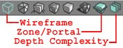
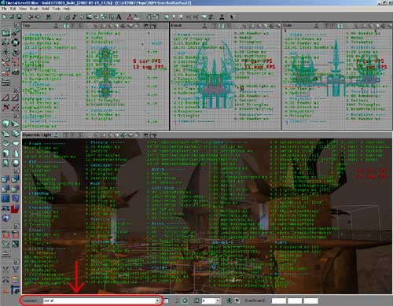
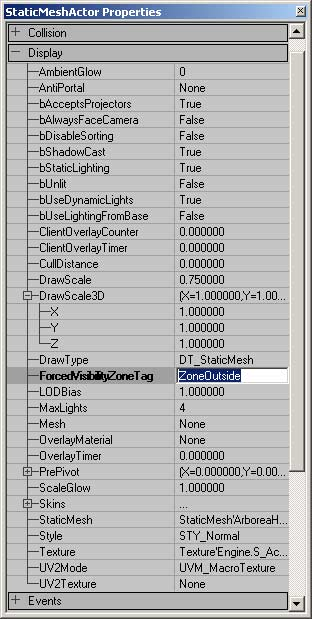

UDN
Search public documentation:
LevelOptimizationProfiling
Interested in the Unreal Engine?
Visit the Unreal Technology site.
Looking for jobs and company info?
Check out the Epic games site.
Questions about support via UDN?
Contact the UDN Staff
Level Optimization - Profiling
Document Summary: A look at how to trouble shoot performance problems in your level at a glance. Document Changelog: Last updated by Michiel Hendirks, minor text changes. Previous update by Jason Lentz (DemiurgeStudios?), to break up in to smaller docs. Original authors were Tomasz Jachimczak (UdnStaff) and Jason Lentz (DemiurgeStudios?).Introduction
While the hardcore profiling of what can be optimized in a level should be left up to your programmers, there are still some initial steps that level designers can take to help determine where the trouble spots in your level might exist. This document outlines some of the approaches one can take within UnrealEd to see what can be improved upon in your level. This document is part of a collection of documents on LevelOptimization, but sure to read the others.Viewport Display Modes
The Viewport Display Modes are the easiest of these tools to use. The three most useful modes are Wireframe, Zone/Portal, and Depth Complexity.
Once you have the Realtime Preview button selected, you can see the editor's approximation of how your level is being rendered. In Wireframe mode, you can see geometry popping in and out as it gets occluded by Antiportals and Zones. In the Zone/Portal mode, you can make sure that the Zones you have created are actually being treated as separate Zones. Each separate Zone of BSP is rendered in a different color. The Depth Complexity tool shows the number of passes that the renderer has to calculate to correctly render the scene. If the texture distribution is well optimized everything in the scene should be green and yellow shaded, but if there are spots of red or if the depth complexity seems to have cycled back to green, then the number of textures used in that area should be reduced. This most commonly happens through using particle systems as well as in layering textures on terrain.Console Commands
Because the editor renders the level in a slightly different way from the way the level renders in game, you will not get a perfect representation of how your level will truly be optimized. You must play the level if you want to see how everything will be treated in game. You will not be able to change anything while playing the game, but by pressing "~" you do have access to the command line. Here are some of the more useful commands and their descriptions to facilitate your optimization process.
A complete list of console commands can be found here, below are some special interesting console commands.Stat Commands
These console commands display text on the screen that reveals numerical statistics of what is happening within the rendered scene. They are also available in the editor and reflect what is rendered in each of the windows that have the Realtime Preview button checked. Note that if you have all four Realtime Previews turned on in the editor, the displayed statistics will include the geometry being rendered in all of the scenes. These stats can be toggled off by retyping the stat into the console command line.- "stat fps": This displays both the current and average frame rate of the level. One should note that while a high frame rate in game is your ultimate goal in optimizing your level, you should not use this statistic to judge whether or not your level will run smoothly on all machines. This is just the framerate for the level on YOUR machine and will most likely vary from computer to computer, so it is best to use the other following statistics.
- "stat hardware": Most of the information displayed here is not critical to level optimization, but the first and third line show the total number of triangles and textures rendered in the scene respectively.
- "stat render": This displays a breakdown of everything that is being rendered in the given scene. The more useful sections to take note of here are the BSP, Terrain, Particle, and StaticMesh sections.
- "stat all": This shows all of the stats.
- "stat none": This hides all of the stats.
Rmodes
These allow you to alter the rendering style within game play giving you the same control as the Viewport Display modes. Below are the descriptions of the different rmodes:- "rmode 1": Wireframe mode
- "rmode 2": Zone/Portal mode
- "rmode 3": Texture Usage mode (this only shows texture usage on BSP geometry)
- "rmode 4": BSP Cuts mode
- "rmode 5": Dynamic Light mode (this is the normal in game mode)
- "rmode 6": Textured mode
- "rmode 7": Lighting Only mode
- "rmode 8": Depth Complexity mode
Manually Assigning Zones
There may be some cases in which you never want a mesh to be rendered if you are in a particular zone. This behavior can be set within the properties window of that mesh. First you must create a ZoneInfo in the one zone from which you want it to be seen, and give it a tag (under the "Events" tab of the ZoneInfo properties). Then in the properties window of the static mesh, open the "Display" tab and go down to ForcedVisibilityZoneTag.
In the above window, the static mesh is set so that it will only be rendered when the camera is in the zone labeled "OutsideZone." You can give multiple zones the tag "OutsideZone," and this will allow the static mesh to be rendered from each zone with that tag. The static mesh however will be occluded if it is hidden through some other means of occlusion. The ForcedVisibilityZoneTag only hides it from the zones with different tags contrary to what its name suggests. Normally, if a zone is not seen all static meshes within that zone are also hidden, but if the static mesh protrudes from that zone into another and you want it to hidden, then this setting is exactly what you want.